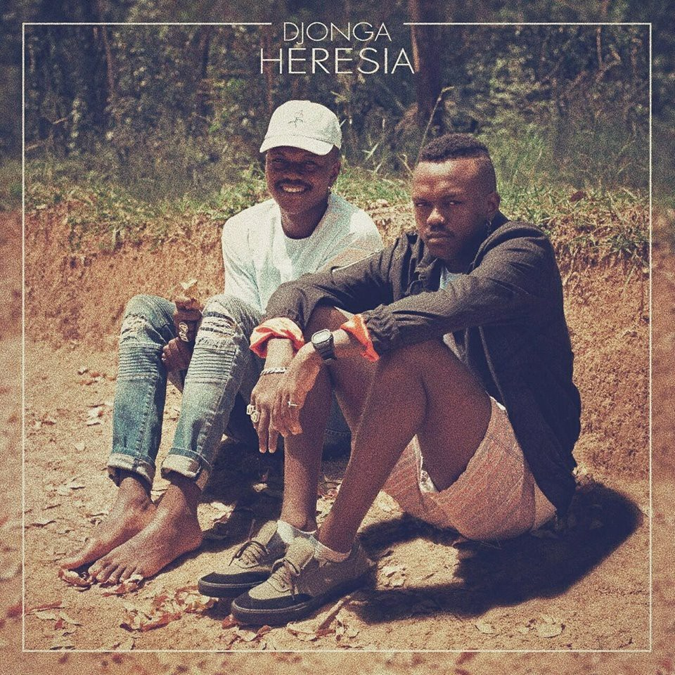
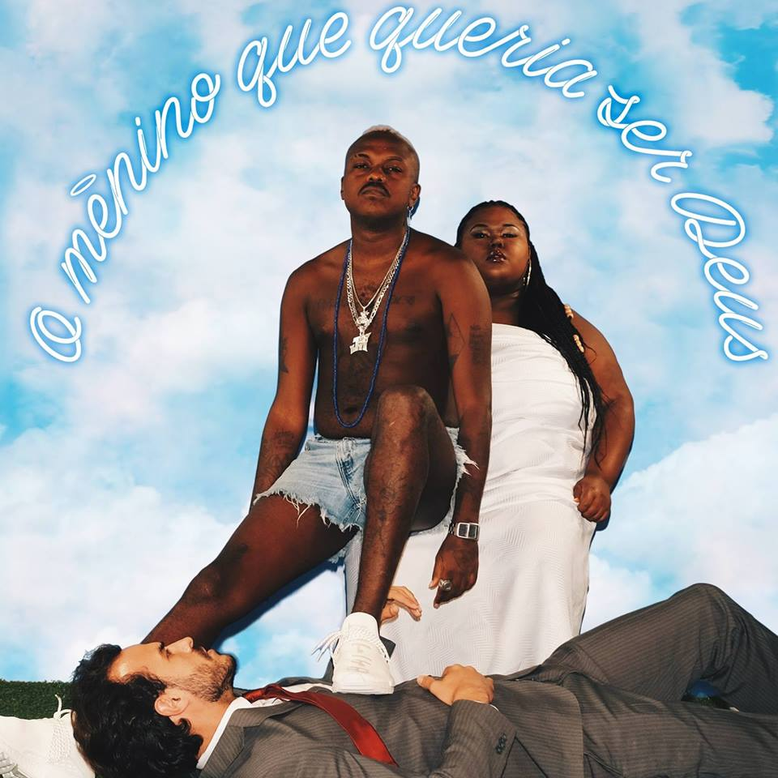
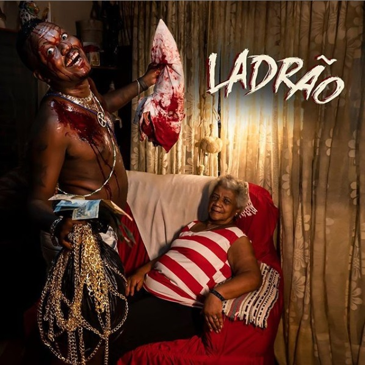

Djonga
Gustavo Pereira Marques, mais conhecido pelo nome artístico
Djonga, é um rapper, escritor e compositor brasileiro
considerado um dos nomes mais influentes do trap/rap atual.
O artista chama a atenção por sua lírica afiada e agressiva
e por suas fortes críticas sociais nas letras. A ideia do
rapper é mostrar que o hip hop não é uma "música
marginalizada", como um dia foi considerado o samba.
Djonga nasceu em Belo Horizonte, na Favela do Índio, e
cresceu no bairro de São Lucas, Santa Efigênia. Sempre
gostou de música e poesia, tendo crescido em uma família
muito musical, ouvindo principalmente MPB.
Começou a compor música em 2010 com apenas 16 anos. Sua
inspiração veio do funk e do rap nacional, sendo seus
primeiros CDs foram do grupo Racionais MCs e de Dogão.
“Foi ai que eu comecei a gostar mesmo do ritmo. Além dos
raps, tinha os funks proibidões. Depois eu comecei a escutar
uns rocks, Cazuza e Barão Vermelho; aí eu vi que queria
escrever música", conta o rapper.
Djonga cursou História na Universidade Federal de Ouro
Preto, e trancou o curso um semestre antes de sua conclusão.
Sua Carreira
Começou a carreira num sarau de poesia, chamado Sarau
Vira-Lata. No começo, por volta de 2012, quando estava se
formando no Ensino Médio, frequentava saraus apenas para
ouvir. Foi neste momento que se interessou por fazer poesia.
Em seguida, o rapper Hot Apocalypse o convidou pra montar um
grupo. Começou, também, a frequentar o estúdio de Chuck,
conhecido como Oculto Beats, o qual produziu uma beat que
Djonga musicou com uma poesia que escrevera antes, fazendo
surgir "Corpo Fechado", seu primeiro single.
Depois de um tempo produziu, junto com o Coyote Beats,
um disco chamado “Fechando o Corpo”, com sete faixas. Após o
lançamento do EP djonga começou a ser mais reconhecido fora
e com isso recebeu uma proposta de DJ Hum para gravar e
juntos fizeram a faixa Um Bom Maluco. Com o lançamento,
Djonga, aos poucos, foi conquistando espaço na nova cena
do rap.
Em 2016, Djonga e Hot criaram o grupo DV Tribo e convocaram
os mineiros FBC, Clara Lima, Oreia e Coyote Beats para
participar. O grupo conseguiu notoriedade após fazer uma
cypher com o selo de rap underground Pirâmide Perdida. No
mesmo ano, o rapper baiano Baco Exu do Blues chamou Djonga
para participar da faixa “Sujismundo”.
Lançou, ao lado do rapper Primata, o single "Redenção",
tendo feito, após isto, novas parcerias, como a participação
na música “Santana 89” da banda de stoner rock autoral,
Arqueologia Siderúrgica. Participou, no final de 2016,
da cypher Poetas no Topo 1, do canal Pineapple Storm TV,
que reuniu MCs proeminentes, como BK, Makalister, Menestrel
e Sant.
Menção à "Heresia"
Heresia, uma obra necessária. Letras que atravessam a
periferia, discutem racismo, drogas, sexo e criminalidade
sem necessariamente tropeçar no óbvio. Uma extensão madura
de tudo aquilo que o rapper vem produzindo desde a estreia
com O Bom Maluco ou mesmo em parceria com o coletivo DV
Tribo.
O trabalho de dez faixas se revela logo nos primeiros
minutos. Da hipocrisia e corrupção pessoal escancarada nos
versos de Corre nas Notas (“Esses manos são de dar dó / Mais
falsos que Fábio Assunção parar de cheirar pó / Mais falsos
que broxar pela primeira vez“), passando pela poesia caótica
de Entre o Código da Espada e o Perfume da Rosa (“Sigo frio
tipo a noite no Saara ó / A vida é um filme de terror / Sem
diretor, sem tempo pra ensaiar / Eu tô num filme de terror“),
Djonga passeia por diferentes histórias, cenas e personagens
sem necessariamente manter o foco em um tema específico.
O Menino Que Queria Ser Deus 
Djonga é um reflexo daquilo que sustenta nos próprios versos:
“Eu sou daqueles que dá o papo reto e vive torto“. Um
personagem errático em um cenário consumido pelo caos urbano,
racismo, conflitos diários, preconceito e a busca declarada
pela sobrevivência. O Menino que Queria Ser Deus (2018,
Independente), como escancara de maneira explícita no título
do segundo álbum de inéditas. Versos angustiados e pequenas
reflexões que nascem como complemento direto ao material
testado pelo rapper mineiro durante a produção do debute
Heresia (2017).
Misto de ruptura e complemento, OMQQSD mostra o esforço do
artista em ampliar os próprios domínios em relação ao
material entregue há poucos meses. Prova disso, está na
estrutura melódica que rege grande parte das canções, como
na acústica De Lá, nona faixa do registro e uma fuga
inteligente da rima seca, reta, anteriormente testada pelo
rapper. Um provar de novas experiências, ritmos e
possibilidades que se veste de renovação mesmo nos instantes
de maior reciclagem conceitual.
YouTube
Ladrão 
“Quando eu era criança, eu andava na rua e me sentia ladrão.
Mesmo quando nunca tinha roubado nada, as pessoas olhavam
com medo. O tempo passou e eu entendi que tipo de ladrão
eu devia ser, esse que busca e traz de volta pras minhas
e pros meus. Aí eu fui lá e fiz o que eu sempre fiz:
roubei, roubei e trouxe de volta“, escreveu no texto de
apresentação do trabalho.
De fato, do momento em que tem
início, em Hat-Trick, até alcançar a derradeira Falcão,
cada verso disparado pelo rapper encontra em pequenas
conquistas pessoais e na celebração ao povo preto a base
para o fortalecimento criativo da obra.
São rimas cruas que passeiam pela periferia brasileira,
seus personagens e instantes de profundo desespero, mas
que a todo momento encontram um evidente ponto de redenção.
Um minucioso jogo de pequenos contrastes, conceito
reforçado com naturalidade em Deus e o Diabo na Terra do
Sol, colaboração com Filipe Ret em que discute o atual
cenário político do Brasil, a efemeridade da vida e a
complexidade das relações humanas. “Comunismo imaginário
num capitalismo real / Esquizofrenia geral numa matemática
louca / Esquece qualquer espectro político, teórico / Porque
na moral, na prática a teoria é outra“, rima o convidado
enquanto Djonga completa: “É que eles têm medo do novo, a
chama que acende o farol / Seremos Deus e o Diabo na terra
do Sol, na terra do Sol“.
À curtinha MLK 4TR3VID0 (“Tá chovendo de gente que fala de
rap e não sabe o que diz / Por isso vê lá onde pisa /
Respeite a camisa que a gente suou“), música guiada apenas
pela voz de Djonga em meio a citações ao trabalho de Jorge
Aragão, cada elemento de Ladrão se transforma em um objeto
de merecido destaque.
YouTube